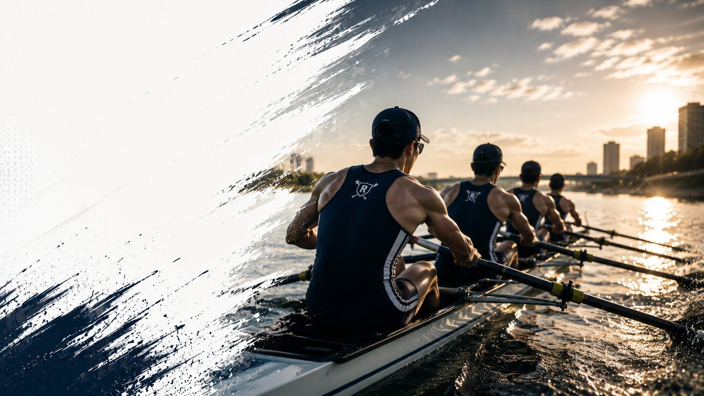

全日本大学ローイング選手権 全記録データベース
大学ボート・インカレの結果を2000年度から全レース収録
全25年度・15種目・4416レースの着順・タイムを収録 | 最終更新 2026-09-05
2025年度（第52回全日本大学ローイング選手権大会）優勝校一覧
最新開催年度の種目別優勝校。詳しい全レース結果は2025年度ページへ。
年度一覧
種目一覧
ローイングマニアを通じて部活を応援する
読みもの
観戦ガイド 2026-09-04
ボート競技（ローイング）のルールを初心者向けに解説｜種目・用語・観戦の基礎知識
「ボート競技 ルール」で検索した方向け。スカルとスイープの違い、エイト・フォアなど艇種の見分け方、レース距離やコースの基本、観戦に役立つ用語をわかりやすく解説します。
キャリア 2026-09-03
ボート部（漕艇部）出身者は転職で経験をどう活かす？キャリアチェンジのタイミングと伝え方
社会人になったボート部・漕艇部OB・OGが転職やキャリアチェンジを考えるとき、学生時代の経験をどう振り返り、どう伝えればよいのか。転職を考えるタイミングの目安や職務経歴書・面接での伝え方、OB・OGネットワークの活かし方をまとめます。
就活・キャリア 2026-09-02
大学ボート部（漕艇部）出身者のES・自己PRの書き方｜未経験からの挑戦をどう伝えるか
大学ボート部（漕艇部）出身者は、エントリーシートや自己PRでどのように競技経験を伝えればよいのか。未経験から始める人が多いという競技特性を踏まえた基本の型と、目標達成・チームワーク・リーダーシップなど場面別の伝え方をまとめます。